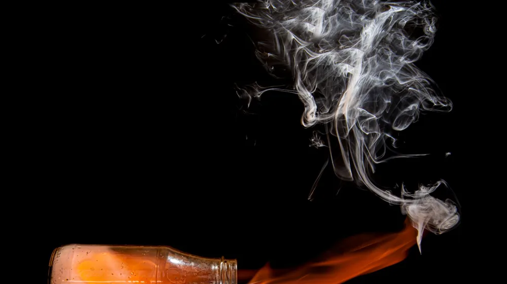

백린, 도대체 왜 지금 난리일까? 숨겨진 위험과 충격적 진실
사진: Ion Ceban @ionelceban / Pexels (무료 이미지, 출처 표기)
백린, 그 이름만으로 섬뜩한 물질의 정체

혹시 ‘백린’이라는 단어를 들어보셨나요? 평범하게 들릴 수도 있는 이 단어가 오늘 대한민국 인터넷을 뜨겁게 달구고 있습니다. 대체 이 백린이라는 물질은 무엇이기에 사람들의 이목을 집중시키고 있을까요?
백린은 인(P)의 동소체 중 하나로, 상온에서 노란색을 띠는 밀랍 같은 고체입니다. 공기 중에서 산소와 만나면 섭씨 30도 정도의 낮은 온도에서도 저절로 불이 붙어 맹렬히 타오르죠. 이 과정에서 연기와 함께 엄청난 열을 뿜어내고, 한 번 불이 붙으면 물로도 쉽게 꺼지지 않는 특성을 가집니다. 바로 이 점이 백린을 단순한 화학물질이 아닌, 섬뜩한 위험 물질로 만드는 핵심입니다.
전쟁의 그림자, '백린탄' 논란의 역사
백린이 이렇게 뜨거운 감자가 된 이유는 주로 '백린탄'이라는 무기 때문입니다. 이스라엘-하마스 분쟁 등 최근 국제 분쟁 지역에서 백린탄 사용 의혹이 제기되면서, 전 세계적으로 다시금 논란의 중심에 서게 된 것이죠.
백린탄은 제1차 세계대전부터 연막탄이나 조명탄으로 사용되어 왔습니다. 목표 지역을 연기로 뒤덮어 적의 시야를 방해하거나, 야간 작전 시 밝은 빛으로 시야를 확보하는 용도였죠. 하지만 문제는 여기서 그치지 않았습니다. 백린이 가진 강렬한 소이(燒夷) 능력, 즉 불태우는 능력이 알려지면서 점차 무기로서의 가치가 부각되기 시작했습니다.
일단 터지면 주변 모든 것을 태워버리고, 사람에게는 회복하기 어려운 치명적인 상해를 입히기 때문입니다. 전쟁 중 민간인 피해가 발생할 때마다 백린탄의 사용은 국제사회의 격렬한 비판을 받아왔습니다.
인간에게 미치는 치명적인 영향: 단순한 화상이 아니다
백린탄이 터지면서 튀는 백린 조각들은 피부에 달라붙어 뼈까지 녹아내리는 듯한 깊은 화상을 입힙니다. 더욱 무서운 것은 이 화상이 단순한 불에 의한 것이 아니라는 점입니다. 산소와 접촉하는 한 계속해서 타오르기 때문에, 환부에서 백린 조각을 완전히 제거하기 전까지는 고통스러운 연소가 멈추지 않습니다.
옷이나 피부에 붙은 백린 조각은 재점화될 수 있어 처치도 매우 까다롭습니다. 또한, 백린 성분이 체내로 흡수되면 간과 신장 등 주요 장기에 심각한 손상을 입히고 심지어 사망에 이르게 할 수도 있습니다. 생존하더라도 평생 지울 수 없는 육체적, 정신적 고통을 안겨주는 무기인 셈입니다.
국제법의 딜레마: 무기인가, 아니면 그 이상인가?
이렇게나 치명적인 백린, 그럼 국제법에서는 어떻게 규정하고 있을까요? 1980년 채택된 특정재래식무기금지협약(CCW)의 제3의정서(소이무기 사용 금지)는 백린을 소이무기로 분류하고, 민간인 지역에서의 사용을 제한하고 있습니다. 하지만 여기에 큰 맹점이 있습니다.
일부 국가들은 백린을 연막이나 조명 목적으로 사용하는 것은 허용되며, 오직 '주된 목적'이 인명 살상이나 재산 파괴일 때만 소이무기로 본다고 주장합니다. 이 애매모호한 해석의 틈새로 백린탄은 여전히 분쟁 지역에서 사용되며 수많은 희생자를 낳고 있는 것이죠. 과연 인간의 고통을 유발하는 모든 백린의 사용은 금지되어야 마땅하지 않을까요?
우리가 몰랐던 백린, 평화로운 용도로도 쓰인다고?
백린이 주로 전쟁의 참혹함과 연결되지만, 사실 산업 분야에서는 다른 용도로도 사용되어 왔습니다. 예를 들어, 인산 비료 제조의 중간 원료나 특정 합금 생산, 그리고 심지어 일부 해충 구제제에도 활용되기도 했습니다. 물론 그 과정에서는 엄격한 통제와 안전 수칙이 필수적입니다.
그러나 이러한 '평화로운' 용도는 백린탄이 초래하는 인도주의적 참상에 비하면 너무나 작고, 일반 대중에게는 거의 알려져 있지 않은 사실입니다. 이처럼 한 가지 물질이 극과 극의 얼굴을 가질 수 있다는 점이 백린에 대한 이해를 더욱 복잡하게 만듭니다.
백린에 대한 정확한 이해, 왜 중요할까?
오늘날 '백린'이라는 단어가 검색어 순위에 오르내리는 것은 단순한 호기심을 넘어섭니다. 이는 국제 정세의 긴박함과 인류의 윤리적 딜레마가 그대로 반영된 현상이라 할 수 있습니다. 우리가 백린의 위험성과 국제적 논란을 정확히 아는 것은 단순한 정보 습득을 넘어섭니다.
인도주의적 재앙을 막고 더 나은 국제 사회를 만들기 위한 논의에 참여하고 목소리를 낼 수 있는 기반이 되기 때문입니다. 이 작은 검색어 하나가 우리에게 던지는 질문은 결코 가볍지 않습니다. 우리가 사는 세상의 어두운 이면을 똑바로 바라보고, 더 나은 미래를 향한 관심과 행동을 촉구하는 계기가 되기를 바랍니다.
🔗 이 글도 함께 보면 좋아요: 대한민국 해양경찰청, 대체 왜 난리일까? 당신이 몰랐던 '진짜' 임무와 숨겨진 희생!